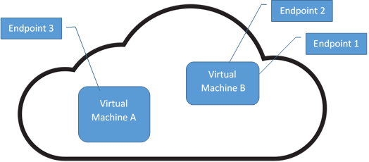

Azure Cloud Service vs Virtual Machine
Initially it might be confusing to deal with Azure's cloud service and virtual machine. When I search for explanation online, most of the answers I found were mostly too technical. Here I would like to share with you the difference between the two after working with them, as simply as possible! Please note that this is how I perceive the two services and it might not be 100% accurate.
Perhaps the easiest way to understand the difference and relationship is through a picture.

From the image above, you can see:
-
In one cloud service, there can be more than one VM.
-
These VMs share the same public IP address, which is the IP address of the the cloud service.
-
This also means the two VMs have the same DNS e.g. my-cloud-service.cloudapp.net.
-
VMs in the same cloud service cannot share the same endpoint port number. For example, VM A is created first and has endpoint of public port 1433. Then VM B is created in the same cloud service and it cannot have endpoint public port 1433 as it is already used by VM A.
-
If the cloud service is configured to be in a private network, all the VMs inside the cloud service will be inside the private network as well. This is useful when we have Virtual Private Connection (VPN). We do net need to redo the VPN setup every time we add a new VM.
So those are how the two services related to each other. You can learn more about the differences here and here.